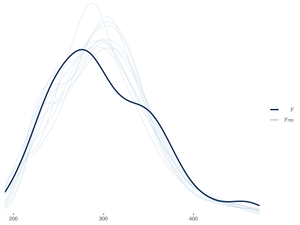

Placeholder
This part is still in progress while I decide what to keep/retain. In the meantime, you can take a look at the old repo.
Bayesian Linear Regression
The following provides a simple working example of a standard regression model using Stan via rstan. It will hopefully to allow some to more easily jump in to using Stan if they are comfortable with R. You would normally just use rstanarm or brms for such a model however.
Data Setup
Create a correlation matrix of one’s choosing assuming response as last column/row.
library(tidyverse)
cormat = matrix(
c(
1, .2, -.1, .3,
.2, 1, .1, .2,
-.1, .1, 1, .1,
.3, .2, .1, 1
),
ncol = 4,
byrow = TRUE
)
cormat [,1] [,2] [,3] [,4]
[1,] 1.0 0.2 -0.1 0.3
[2,] 0.2 1.0 0.1 0.2
[3,] -0.1 0.1 1.0 0.1
[4,] 0.3 0.2 0.1 1.0cormat = Matrix::nearPD(cormat, corr = TRUE)$mat
n = 1000
means = rep(0, ncol(cormat))
d = MASS::mvrnorm(n, means, cormat, empirical = TRUE)
colnames(d) = c('X1', 'X2', 'X3', 'y')
d[,'y'] = d[,'y'] - .1 # unnecessary, just to model a non-zero intercept
str(d) num [1:1000, 1:4] 2.313 0.651 1.932 0.582 0.432 ...
- attr(*, "dimnames")=List of 2
..$ : NULL
..$ : chr [1:4] "X1" "X2" "X3" "y"cor(d) X1 X2 X3 y
X1 1.0 0.2 -0.1 0.3
X2 0.2 1.0 0.1 0.2
X3 -0.1 0.1 1.0 0.1
y 0.3 0.2 0.1 1.0### Prepare for Stan
# create X (add intercept column) and y for vectorized version later
X = cbind(1, d[,1:3]); colnames(X) = c('Intercept', 'X1', 'X2', 'X3')
y = d[,4]Model Code
Initial preparation, create the data list object.
dat = list(
N = n,
k = 4,
y = y,
X = X
)Create the Stan model code.
data { // Data block; declarations only
int<lower = 0> N; // Sample size
int<lower = 0> k; // Dimension of model matrix
matrix [N, k] X; // Model Matrix
vector[N] y; // Target
}
/* transformed data { // Transformed data block; declarations and statements. None needed here.
}
*/
parameters { // Parameters block; declarations only
vector[k] beta; // Coefficient vector
real<lower = 0> sigma; // Error scale
}
transformed parameters { // Transformed parameters block; declarations and statements.
}
model { // Model block; declarations and statements.
vector[N] mu;
mu = X * beta; // Linear predictor
// priors
beta ~ normal(0, 1);
sigma ~ cauchy(0, 1); // With sigma bounded at 0, this is half-cauchy
// likelihood
y ~ normal(mu, sigma);
}
generated quantities { // Generated quantities block; declarations and statements.
real rss;
real totalss;
real R2; // Calculate Rsq as a demonstration
vector[N] y_hat;
y_hat = X * beta;
rss = dot_self(y - y_hat);
totalss = dot_self(y - mean(y));
R2 = 1 - rss/totalss;
}Estimation
Run the model and examine results. The following assumes a character string or file (bayes_linreg) of the previous model code.
library(rstan)
fit = sampling(
bayes_linreg,
data = dat,
thin = 4,
verbose = FALSE
)Note the pars argument in the following. You must specify desired parameters or it will print out everything, including the y_hat, i.e. expected values. Also note that by taking into account the additional uncertainty estimating sigma, you get a shrunken Rsq (see Gelman & Pardoe 2006 sec. 3).
print(
fit,
digits_summary = 3,
pars = c('beta', 'sigma', 'R2'),
probs = c(.025, .5, .975)
)Inference for Stan model: 17507cf73e3a44aeee4c4249d3521a85.
4 chains, each with iter=2000; warmup=1000; thin=4;
post-warmup draws per chain=250, total post-warmup draws=1000.
mean se_mean sd 2.5% 50% 97.5% n_eff Rhat
beta[1] -0.101 0.001 0.031 -0.161 -0.102 -0.037 1001 0.998
beta[2] 0.286 0.001 0.031 0.226 0.285 0.346 971 1.001
beta[3] 0.132 0.001 0.030 0.074 0.133 0.189 1028 1.001
beta[4] 0.114 0.001 0.029 0.056 0.114 0.171 920 1.006
sigma 0.938 0.001 0.020 0.900 0.937 0.981 967 0.999
R2 0.120 0.000 0.002 0.114 0.120 0.123 739 0.999
Samples were drawn using NUTS(diag_e) at Tue Nov 10 14:01:13 2020.
For each parameter, n_eff is a crude measure of effective sample size,
and Rhat is the potential scale reduction factor on split chains (at
convergence, Rhat=1).Comparison
Compare to basic lm result.
modlm = lm(y ~ ., data.frame(d))
# Compare
summary(modlm)
Call:
lm(formula = y ~ ., data = data.frame(d))
Residuals:
Min 1Q Median 3Q Max
-2.85461 -0.63666 0.03136 0.55565 2.94898
Coefficients:
Estimate Std. Error t value Pr(>|t|)
(Intercept) -0.10000 0.02965 -3.372 0.000774 ***
X1 0.28526 0.03051 9.349 < 2e-16 ***
X2 0.13141 0.03051 4.307 1.82e-05 ***
X3 0.11538 0.03004 3.840 0.000131 ***
---
Signif. codes: 0 '***' 0.001 '**' 0.01 '*' 0.05 '.' 0.1 ' ' 1
Residual standard error: 0.9377 on 996 degrees of freedom
Multiple R-squared: 0.1234, Adjusted R-squared: 0.1208
F-statistic: 46.73 on 3 and 996 DF, p-value: < 2.2e-16Visualize
Visualize the posterior predictive distribution.
# shinystan::launch_shinystan(fit) # diagnostic plots
library(bayesplot)
pp_check(
dat$y,
rstan::extract(fit, par = 'y_hat')$y_hat[1:10, ],
fun = 'dens_overlay'
)Bayesian Mixed Model
Estimate the classic sleepstudy example of lme4. Part of this code was based on that seen on this old Stan thread, but you can look at the underlying code for rstanarm or brms for a fully optimized approach compared to this conceptual one.
Data Setup
The data comes from the lme4 package. It deals with reaction time to some task vs. sleep deprivation over 10 days.
library(tidyverse)
library(lme4)
data(sleepstudy)
# ?sleepstudy
dat = list(
N = nrow(sleepstudy),
I = n_distinct(sleepstudy$Subject),
Subject = as.numeric(sleepstudy$Subject),
Days = sleepstudy$Days,
RT = sleepstudy$Reaction
)Model Code
Create the Stan model code.
data { // data setup
int<lower = 1> N; // sample size
int<lower = 1> I; // number of subjects
vector<lower = 0>[N] RT; // Response: reaction time
vector<lower = 0>[N] Days; // Days in study
int<lower = 1, upper = I> Subject[N]; // Subject
}
transformed data {
real IntBase;
real RTsd;
IntBase = mean(RT); // Intercept starting point
RTsd = sd(RT);
}
parameters {
real Intercept01; // fixed effects
real beta01;
vector<lower = 0>[2] sigma_u; // sd for ints and slopes
real<lower = 0> sigma_y; // residual sd
vector[2] gamma[I]; // individual effects
cholesky_factor_corr[2] Omega_chol; // correlation matrix for random intercepts and slopes (chol decomp)
}
transformed parameters {
vector[I] gammaIntercept; // individual effects (named)
vector[I] gammaDays;
real Intercept;
real beta;
Intercept = IntBase + Intercept01 * RTsd;
beta = beta01 * 10;
for (i in 1:I){
gammaIntercept[i] = gamma[i, 1];
gammaDays[i] = gamma[i, 2];
}
}
model {
matrix[2,2] D;
matrix[2,2] DC;
vector[N] mu; // Linear predictor
vector[2] gamma_mu; // vector of Intercept and beta
D = diag_matrix(sigma_u);
gamma_mu[1] = Intercept;
gamma_mu[2] = beta;
// priors
Intercept01 ~ normal(0, 1); // example of weakly informative priors;
beta01 ~ normal(0, 1); // remove to essentially duplicate lme4 via improper prior
Omega_chol ~ lkj_corr_cholesky(2.0);
sigma_u ~ cauchy(0, 2.5); // prior for RE scale
sigma_y ~ cauchy(0, 2.5); // prior for residual scale
DC = D * Omega_chol;
for (i in 1:I) // loop for Subject random effects
gamma[i] ~ multi_normal_cholesky(gamma_mu, DC);
// likelihood
for (n in 1:N)
mu[n] = gammaIntercept[Subject[n]] + gammaDays[Subject[n]] * Days[n];
RT ~ normal(mu, sigma_y);
}
generated quantities {
matrix[2, 2] Omega; // correlation of RE
vector[N] y_hat;
Omega = tcrossprod(Omega_chol);
for (n in 1:N)
y_hat[n] = gammaIntercept[Subject[n]] + gammaDays[Subject[n]] * Days[n];
}Estimation
Run the model and examine results. The following assumes a character string or file (bayes_mixed) of the previous model code.
library(rstan)
fit = sampling(
bayes_mixed,
data = dat,
thin = 4,
verbose = FALSE
)Comparison
Compare to lme4 result.
print(
fit,
digits_summary = 3,
pars = c('Intercept', 'beta', 'sigma_y', 'sigma_u', 'Omega[1,2]'),
probs = c(.025, .5, .975)
)Inference for Stan model: 82d45c0b016c1733e4bbc33ce7699190.
4 chains, each with iter=2000; warmup=1000; thin=4;
post-warmup draws per chain=250, total post-warmup draws=1000.
mean se_mean sd 2.5% 50% 97.5% n_eff Rhat
Intercept 252.070 0.206 6.596 239.208 252.029 265.202 1024 0.998
beta 10.260 0.049 1.557 7.138 10.301 13.257 1020 1.003
sigma_y 25.906 0.050 1.593 23.037 25.758 29.166 1025 1.002
sigma_u[1] 23.970 0.192 6.184 12.407 23.438 37.623 1036 0.999
sigma_u[2] 6.003 0.045 1.352 3.833 5.857 9.131 890 1.005
Omega[1,2] 0.116 0.009 0.265 -0.374 0.110 0.626 943 1.001
Samples were drawn using NUTS(diag_e) at Tue Nov 10 14:41:51 2020.
For each parameter, n_eff is a crude measure of effective sample size,
and Rhat is the potential scale reduction factor on split chains (at
convergence, Rhat=1).mod_lme = lmer(Reaction ~ Days + (Days | Subject), sleepstudy)
mod_lmeLinear mixed model fit by REML ['lmerMod']
Formula: Reaction ~ Days + (Days | Subject)
Data: sleepstudy
REML criterion at convergence: 1743.628
Random effects:
Groups Name Std.Dev. Corr
Subject (Intercept) 24.741
Days 5.922 0.07
Residual 25.592
Number of obs: 180, groups: Subject, 18
Fixed Effects:
(Intercept) Days
251.41 10.47 cbind(
coef(mod_lme)$Subject,
matrix(get_posterior_mean(fit, par = c('gammaIntercept', 'gammaDays'))[, 'mean-all chains'],
ncol = 2)
) (Intercept) Days 1 2
308 253.6637 19.6662617 254.9401 19.375944
309 211.0064 1.8476053 213.2745 1.574232
310 212.4447 5.0184295 214.7572 4.692619
330 275.0957 5.6529356 272.8280 6.004261
331 273.6654 7.3973743 272.3311 7.680547
332 260.4447 10.1951090 260.1453 10.206502
333 268.2456 10.2436499 267.0088 10.444546
334 244.1725 11.5418676 245.5201 11.319058
335 251.0714 -0.2848792 249.7039 -0.052901
337 286.2956 19.0955511 285.3455 19.191933
349 226.1949 11.6407181 228.6388 11.230074
350 238.3351 17.0815038 240.2908 16.699843
351 255.9830 7.4520239 254.7578 7.642752
352 272.2688 14.0032871 271.5638 14.099152
369 254.6806 11.3395008 254.8691 11.329122
370 225.7921 15.2897709 228.3114 14.818999
371 252.2122 9.4791297 252.2465 9.444850
372 263.7197 11.7513080 262.8522 11.886185Visualize
Visualize the posterior predictive distribution.
# shinystan::launch_shinystan(fit) # diagnostic plots
library(bayesplot)
pp_check(
dat$RT,
rstan::extract(fit, par = 'y_hat')$y_hat[1:10, ],
fun = 'dens_overlay'
)
Bayesian Multilevel Mediation
The following demonstrates an indirect effect in a multilevel situation. It is
based on Yuan & MacKinnon 2009, which provides some Bugs code. In what follows
we essentially have two models, one where the ‘mediator’ is the response; the
other regards the primary response of interest (noted y). They will be referred
to with Med or Main respectively.
Data Setup
The two main models are expressed conceptually as follows:
\[Mediator \sim \alpha_{Med} + \beta_{Med}\cdot X\] \[y \sim \alpha_{Main} + \beta_{1\_{Main}}\cdot X + \beta_{2\_{Main}}\cdot Mediator\]
However, there will be random effects for a grouping variable for each coefficient, i.e. random intercepts and slopes.
Let’s create data to this effect.
library(tidyverse)
set.seed(8675309)
## random effects for mediator model
# create cov matrix of RE etc. with no covariance between model random effects
# covmat_RE = matrix(c(1,-.15,0,0,0,
# -.15,.4,0,0,0,
# 0,0,1,-.1,.15,
# 0,0,-.1,.3,0,
# 0,0,.15,0,.2), nrow=5, byrow = T)
# or with slight cov added to indirect coefficient RE; both matrices are pos def
covmat_RE = matrix(c(1,-.15,0,0,0,
-.15,.64,0,0,-.1,
0,0,1,-.1,.15,
0,0,-.1,.49,0,
0,-.1,.15,0,.25), nrow = 5, byrow = TRUE)
# inspect
covmat_RE [,1] [,2] [,3] [,4] [,5]
[1,] 1.00 -0.15 0.00 0.00 0.00
[2,] -0.15 0.64 0.00 0.00 -0.10
[3,] 0.00 0.00 1.00 -0.10 0.15
[4,] 0.00 0.00 -0.10 0.49 0.00
[5,] 0.00 -0.10 0.15 0.00 0.25# inspect as correlation
cov2cor(covmat_RE) [,1] [,2] [,3] [,4] [,5]
[1,] 1.0000 -0.1875 0.0000000 0.0000000 0.00
[2,] -0.1875 1.0000 0.0000000 0.0000000 -0.25
[3,] 0.0000 0.0000 1.0000000 -0.1428571 0.30
[4,] 0.0000 0.0000 -0.1428571 1.0000000 0.00
[5,] 0.0000 -0.2500 0.3000000 0.0000000 1.00# simulate
re = MASS::mvrnorm(50,
mu = rep(0, 5),
Sigma = covmat_RE,
empirical = TRUE)
# random effects for mediator model
ranef_alpha_Med = rep(re[, 1], e = 10)
ranef_beta_Med = rep(re[, 2], e = 10)
# random effects for main model
ranef_alpha_Main = rep(re[, 3], e = 10)
ranef_beta1_Main = rep(re[, 4], e = 10)
ranef_beta2_Main = rep(re[, 5], e = 10)
## fixed effects
alpha_Med = 2
beta_Med = .2
alpha_Main = 1
beta1_Main = .3
beta2_Main = -.2
# residual variance
resid_Med = MASS::mvrnorm(500, 0, .75^2, empirical = TRUE)
resid_Main = MASS::mvrnorm(500, 0, .5^2, empirical = TRUE)
# Collect parameters for later comparison
params = c(
alpha_Med = alpha_Med,
beta_Med = beta_Med,
sigma_Med = sd(resid_Med),
alpha_Main = alpha_Main,
beta1_Main = beta1_Main,
beta2_Main = beta2_Main,
sigma_y = sd(resid_Main),
alpha_Med_sd = sqrt(diag(covmat_RE)[1]),
beta_Med_sd = sqrt(diag(covmat_RE)[2]),
alpha_sd = sqrt(diag(covmat_RE)[3]),
beta1_sd = sqrt(diag(covmat_RE)[4]),
beta2_sd = sqrt(diag(covmat_RE)[5])
)
ranefs = cbind(
gamma_alpha_Med = unique(ranef_alpha_Med),
gamma_beta_Med = unique(ranef_beta_Med),
gamma_alpha = unique(ranef_alpha_Main),
gamma_beta1 = unique(ranef_beta1_Main),
gamma_beta2 = unique(ranef_beta2_Main)
)Finally, we can create the data for analysis.
X = rnorm(500, sd = 2)
Med = (alpha_Med + ranef_alpha_Med) + (beta_Med + ranef_beta_Med) * X + resid_Med[, 1]
y = (alpha_Main + ranef_alpha_Main) + (beta1_Main + ranef_beta1_Main) * X +
(beta2_Main + ranef_beta2_Main) * Med + resid_Main[, 1]
group = rep(1:50, e = 10)
standat = list(
X = X,
Med = Med,
y = y,
Group = group,
J = length(unique(group)),
N = length(y)
)Model Code
In the following, the cholesky decomposition of the RE covariance matrix is used for efficiency. As a rough guide, the default data where N = 500 took about 5 min to run for the main model with iter=12000 and warmup = 2000.
data {
int<lower = 1> N; // Sample size
vector[N] X; // Explanatory variable
vector[N] Med; // Mediator
vector[N] y; // Response
int<lower = 1> J; // Number of groups
int<lower = 1,upper = J> Group[N]; // Groups
}
parameters{
real alpha_Med; // mediator model reg parameters and related
real beta_Med;
real<lower = 0> sigma_alpha_Med;
real<lower = 0> sigma_beta_Med;
real<lower = 0> sigmaMed;
real alpha_Main; // main model reg parameters and related
real beta1_Main;
real beta2_Main;
real<lower = 0> sigma_alpha;
real<lower = 0> sigma_beta1;
real<lower = 0> sigma_beta2;
real<lower = 0> sigma_y;
cholesky_factor_corr[5] Omega_chol; // chol decomp of corr matrix for random effects
vector<lower = 0>[5] sigma_ranef; // sd for random effects
matrix[J,5] gamma; // random effects
}
transformed parameters{
vector[J] gamma_alpha_Med;
vector[J] gamma_beta_Med;
vector[J] gamma_alpha;
vector[J] gamma_beta1;
vector[J] gamma_beta2;
for (j in 1:J){
gamma_alpha_Med[j] = gamma[j,1];
gamma_beta_Med[j] = gamma[j,2];
gamma_alpha[j] = gamma[j,3];
gamma_beta1[j] = gamma[j,4];
gamma_beta2[j] = gamma[j,5];
}
}
model {
vector[N] mu_y; // linear predictors for response and mediator
vector[N] mu_Med;
matrix[5,5] D;
matrix[5,5] DC;
// priors
// mediator model
// fixef
// for scale params the cauchy is a little more informative here due
// to the nature of the data
sigma_alpha_Med ~ cauchy(0, 1);
sigma_beta_Med ~ cauchy(0, 1);
alpha_Med ~ normal(0, sigma_alpha_Med);
beta_Med ~ normal(0, sigma_beta_Med);
// residual scale
sigmaMed ~ cauchy(0, 1);
// main model
// fixef
sigma_alpha ~ cauchy(0, 1);
sigma_beta1 ~ cauchy(0, 1);
sigma_beta2 ~ cauchy(0, 1);
alpha_Main ~ normal(0, sigma_alpha);
beta1_Main ~ normal(0, sigma_beta1);
beta2_Main ~ normal(0, sigma_beta2);
// residual scale
sigma_y ~ cauchy(0, 1);
// ranef sampling via cholesky decomposition
sigma_ranef ~ cauchy(0, 1);
Omega_chol ~ lkj_corr_cholesky(2.0);
D = diag_matrix(sigma_ranef);
DC = D * Omega_chol;
for (j in 1:J) // loop for Group random effects
gamma[j] ~ multi_normal_cholesky(rep_vector(0, 5), DC);
// Linear predictors
for (n in 1:N){
mu_Med[n] = alpha_Med + gamma_alpha_Med[Group[n]] +
(beta_Med + gamma_beta_Med[Group[n]]) * X[n];
mu_y[n] = alpha_Main + gamma_alpha[Group[n]] +
(beta1_Main + gamma_beta1[Group[n]]) * X[n] +
(beta2_Main + gamma_beta2[Group[n]]) * Med[n] ;
}
// sampling for primary models
Med ~ normal(mu_Med, sigmaMed);
y ~ normal(mu_y, sigma_y);
}
generated quantities{
real naive_ind_effect;
real avg_ind_effect;
real total_effect;
matrix[5,5] cov_RE;
vector[N] y_hat;
cov_RE = diag_matrix(sigma_ranef) * tcrossprod(Omega_chol) * diag_matrix(sigma_ranef);
naive_ind_effect = beta_Med*beta2_Main;
avg_ind_effect = beta_Med*beta2_Main + cov_RE[2,5];
total_effect = avg_ind_effect + beta1_Main;
for (n in 1:N){
y_hat[n] = alpha_Main + gamma_alpha[Group[n]] +
(beta1_Main + gamma_beta1[Group[n]]) * X[n] +
(beta2_Main + gamma_beta2[Group[n]]) * Med[n] ;
}
}Estimation
Run the model and examine results. The following assumes a character string or file (bayes_mixed) of the previous model code.
library(rstan)
fit = sampling(
bayes_med_model,
data = standat,
iter = 3000,
warmup = 2000,
thin = 4,
cores = 4,
control = list(adapt_delta = .99, max_treedepth = 15)
)Comparison
Main parameters include fixed and random effect standard deviation, plus those related to indirect effect.
mainpars = c(
'alpha_Med',
'beta_Med',
'sigmaMed',
'alpha_Main',
'beta1_Main',
'beta2_Main',
'sigma_y',
'sigma_ranef',
'naive_ind_effect',
'avg_ind_effect',
'total_effect'
)
print(
fit,
digits = 3,
probs = c(.025, .5, 0.975),
pars = mainpars
)Inference for Stan model: baab5ebe3046f0dc079803aa2af1fb6c.
4 chains, each with iter=2000; warmup=1000; thin=4;
post-warmup draws per chain=250, total post-warmup draws=1000.
mean se_mean sd 2.5% 50% 97.5% n_eff Rhat
alpha_Med 2.010 0.008 0.153 1.694 2.015 2.302 337 1.005
beta_Med 0.161 0.007 0.124 -0.059 0.154 0.399 277 1.005
sigmaMed 0.744 0.001 0.026 0.694 0.743 0.798 982 1.001
alpha_Main 0.960 0.007 0.166 0.617 0.965 1.255 494 1.003
beta1_Main 0.274 0.008 0.123 0.026 0.275 0.506 222 1.006
beta2_Main -0.178 0.004 0.079 -0.333 -0.179 -0.014 507 1.004
sigma_y 0.500 0.001 0.019 0.465 0.499 0.540 924 0.997
sigma_ranef[1] 1.067 0.004 0.116 0.855 1.062 1.311 715 0.998
sigma_ranef[2] 0.857 0.003 0.087 0.705 0.847 1.049 953 1.000
sigma_ranef[3] 1.014 0.005 0.136 0.784 1.009 1.307 885 0.998
sigma_ranef[4] 0.789 0.003 0.088 0.635 0.781 0.975 1050 0.999
sigma_ranef[5] 0.479 0.002 0.061 0.378 0.476 0.609 876 1.003
naive_ind_effect -0.031 0.002 0.030 -0.100 -0.025 0.007 274 1.008
avg_ind_effect -0.149 0.003 0.074 -0.306 -0.143 -0.014 796 1.000
total_effect 0.125 0.008 0.137 -0.139 0.120 0.383 262 1.005
Samples were drawn using NUTS(diag_e) at Wed Nov 11 14:34:19 2020.
For each parameter, n_eff is a crude measure of effective sample size,
and Rhat is the potential scale reduction factor on split chains (at
convergence, Rhat=1).We can use a piecemeal mixed model via lme4 for initial comparison. However, it can’t directly estimate mediated effect, and it won’t pick up on correlation of random effects between models.
library(lme4)
mod_Med = lmer(Med ~ X + (1 + X | group))
summary(mod_Med)Linear mixed model fit by REML ['lmerMod']
Formula: Med ~ X + (1 + X | group)
REML criterion at convergence: 1456.7
Scaled residuals:
Min 1Q Median 3Q Max
-2.55601 -0.66077 -0.00442 0.57621 3.12555
Random effects:
Groups Name Variance Std.Dev. Corr
group (Intercept) 1.0315 1.0156
X 0.6688 0.8178 -0.27
Residual 0.5513 0.7425
Number of obs: 500, groups: group, 50
Fixed effects:
Estimate Std. Error t value
(Intercept) 2.0221 0.1480 13.665
X 0.2197 0.1172 1.874
Correlation of Fixed Effects:
(Intr)
X -0.257mod_Main = lmer(y ~ X + Med + (1 + X + Med | group))
summary(mod_Main)Linear mixed model fit by REML ['lmerMod']
Formula: y ~ X + Med + (1 + X + Med | group)
REML criterion at convergence: 1211.9
Scaled residuals:
Min 1Q Median 3Q Max
-2.6843 -0.6232 0.0540 0.5721 2.5242
Random effects:
Groups Name Variance Std.Dev. Corr
group (Intercept) 0.9208 0.9596
X 0.5657 0.7521 -0.19
Med 0.2051 0.4529 0.52 -0.03
Residual 0.2479 0.4979
Number of obs: 500, groups: group, 50
Fixed effects:
Estimate Std. Error t value
(Intercept) 0.98312 0.15318 6.418
X 0.27141 0.10924 2.484
Med -0.19818 0.07234 -2.739
Correlation of Fixed Effects:
(Intr) X
X -0.144
Med 0.218 -0.055# should equal the naive estimate in the following code
lme_indirect_effect = fixef(mod_Med)['X'] * fixef(mod_Main)['Med']Using the mediation package will provide a better estimate, and can handle this simple mixed model setting.
# library(mediation)
mediation_mixed = mediation::mediate(
model.m = mod_Med,
model.y = mod_Main,
treat = 'X',
mediator = 'Med'
)
summary(mediation_mixed)
Causal Mediation Analysis
Quasi-Bayesian Confidence Intervals
Mediator Groups: group
Outcome Groups: group
Output Based on Overall Averages Across Groups
Estimate 95% CI Lower 95% CI Upper p-value
ACME -0.1240 -0.1997 -0.06 <2e-16 ***
ADE 0.2684 0.0581 0.48 0.012 *
Total Effect 0.1445 -0.0852 0.36 0.226
Prop. Mediated -0.6432 -7.8472 9.27 0.226
---
Signif. codes: 0 '***' 0.001 '**' 0.01 '*' 0.05 '.' 0.1 ' ' 1
Sample Size Used: 500
Simulations: 1000 Extract parameters for comparison.
pars_primary = get_posterior_mean(fit, pars = mainpars)[, 5]
pars_re_cov = get_posterior_mean(fit, pars = 'Omega_chol')[, 5] # or take 'cov_RE' from monte carlo sim
pars_re = get_posterior_mean(fit, pars = c('sigma_ranef'))[, 5]Fixed effects and random effect variances.
| param | true | bayes | lme4 |
|---|---|---|---|
| alpha_Med | 2.00 | 2.010 | 2.022 |
| beta_Med | 0.20 | 0.161 | 0.220 |
| sigma_Med | 0.75 | 0.744 | 0.743 |
| alpha_Main | 1.00 | 0.960 | 0.983 |
| beta1_Main | 0.30 | 0.274 | 0.271 |
| beta2_Main | -0.20 | -0.178 | -0.198 |
| sigma_y | 0.50 | 0.500 | 0.498 |
| alpha_Med_sd | 1.00 | 1.067 | 1.016 |
| beta_Med_sd | 0.80 | 0.857 | 0.818 |
| alpha_sd | 1.00 | 1.014 | 0.960 |
| beta1_sd | 0.70 | 0.789 | 0.752 |
| beta2_sd | 0.50 | 0.479 | 0.453 |
Compare the covariances of the random effects. The first shows the full covariance matrix for mediator and outcome, then broken out separately.
$true
[,1] [,2] [,3] [,4] [,5]
[1,] 1.00 -0.15 0.00 0.00 0.00
[2,] -0.15 0.64 0.00 0.00 -0.10
[3,] 0.00 0.00 1.00 -0.10 0.15
[4,] 0.00 0.00 -0.10 0.49 0.00
[5,] 0.00 -0.10 0.15 0.00 0.25
$estimates
[,1] [,2] [,3] [,4] [,5]
[1,] 1.14 -0.21 0.05 0.03 0.02
[2,] -0.21 0.72 0.05 0.00 -0.11
[3,] 0.05 0.05 0.98 -0.13 0.20
[4,] 0.03 0.00 -0.13 0.58 0.00
[5,] 0.02 -0.11 0.20 0.00 0.21$vcov_Med
[,1] [,2]
[1,] 1.00 -0.15
[2,] -0.15 0.64
$vcov_Med_bayes
[,1] [,2]
[1,] 1.14 -0.21
[2,] -0.21 0.72
$vcov_Med_lme4
(Intercept) X
(Intercept) 1.03 -0.22
X -0.22 0.67$vcov_Main
[,1] [,2] [,3]
[1,] 1.00 -0.10 0.15
[2,] -0.10 0.49 0.00
[3,] 0.15 0.00 0.25
$vcov_Main_bayes
[,1] [,2] [,3]
[1,] 0.98 -0.13 0.20
[2,] -0.13 0.58 0.00
[3,] 0.20 0.00 0.21
$vcov_Main_lme4
(Intercept) X Med
(Intercept) 0.92 -0.14 0.22
X -0.14 0.57 -0.01
Med 0.22 -0.01 0.21Compare indirect effects
| true | est | naiveBayes | naiveLme | mediation_pack |
|---|---|---|---|---|
| -0.14 | -0.149 | -0.031 | -0.044 | -0.124 |
Visualization
# interactive diagnostics
# shinystan::launch_shinystan(fit)
library(bayesplot)
pp_check(
standat$y,
rstan::extract(fit, par = 'y_hat')$y_hat[1:10, ],
fun = 'dens_overlay'
)
Bayesian IRT
The following shows some code demonstration for one through four parameter IRT models, though will only extensively explore the first two.
One Parameter IRT
Data Setup
This data set has the responses of 316 participants on 24 items of a questionnaire on verbal aggression. Other covariates are also provided. For simplicity I will focus on the four ‘DoShout’ items.
library(tidyverse)
data("VerbAgg", package = "lme4")
glimpse(VerbAgg)Rows: 7,584
Columns: 9
$ Anger <int> 20, 11, 17, 21, 17, 21, 39, 21, 24, 16, 15, 18, 36, 22, 16, 18, 23, 16, 21, 25, 22, 15, 26, 13, 33, 17, 17, 22, 21, 17, 19, 18, 33, 19, 25, 17, 12, 14, 25, 22, 20, 25, 12, 16, 23, 19, 22, 15, 25, 35, 24…
$ Gender <fct> M, M, F, F, F, F, F, F, F, F, F, F, M, M, F, F, F, F, F, F, F, F, F, F, F, F, F, F, M, F, F, M, M, F, F, F, F, F, M, M, F, F, F, F, F, F, F, F, F, F, F, F, F, F, F, F, F, F, M, F, F, F, F, F, F, F, F, F…
$ item <fct> S1WantCurse, S1WantCurse, S1WantCurse, S1WantCurse, S1WantCurse, S1WantCurse, S1WantCurse, S1WantCurse, S1WantCurse, S1WantCurse, S1WantCurse, S1WantCurse, S1WantCurse, S1WantCurse, S1WantCurse, S1WantC…
$ resp <ord> no, no, perhaps, perhaps, perhaps, yes, yes, no, no, yes, perhaps, yes, yes, yes, perhaps, perhaps, perhaps, perhaps, no, perhaps, perhaps, yes, yes, perhaps, no, no, yes, yes, perhaps, yes, yes, perhap…
$ id <fct> 1, 2, 3, 4, 5, 6, 7, 8, 9, 10, 11, 12, 13, 14, 15, 16, 17, 18, 19, 20, 21, 22, 23, 24, 25, 26, 27, 28, 29, 30, 31, 32, 33, 34, 35, 36, 37, 38, 39, 40, 41, 42, 43, 44, 45, 46, 47, 48, 49, 50, 51, 52, 53,…
$ btype <fct> curse, curse, curse, curse, curse, curse, curse, curse, curse, curse, curse, curse, curse, curse, curse, curse, curse, curse, curse, curse, curse, curse, curse, curse, curse, curse, curse, curse, curse,…
$ situ <fct> other, other, other, other, other, other, other, other, other, other, other, other, other, other, other, other, other, other, other, other, other, other, other, other, other, other, other, other, other,…
$ mode <fct> want, want, want, want, want, want, want, want, want, want, want, want, want, want, want, want, want, want, want, want, want, want, want, want, want, want, want, want, want, want, want, want, want, want…
$ r2 <fct> N, N, Y, Y, Y, Y, Y, N, N, Y, Y, Y, Y, Y, Y, Y, Y, Y, N, Y, Y, Y, Y, Y, N, N, Y, Y, Y, Y, Y, Y, N, Y, Y, Y, N, N, N, N, Y, N, Y, N, N, Y, Y, N, N, Y, N, N, Y, Y, N, Y, Y, Y, N, N, Y, Y, Y, Y, Y, N, Y, Y…verbagg_items = VerbAgg %>%
filter(btype == 'shout', situ == 'self') %>%
select(id, item, r2)
verbagg_items_wide = verbagg_items %>%
pivot_wider(id_cols = id, names_from = item, names_prefix = 'item_', values_from = r2)While we often think of the data in ‘wide form’, with one row per person and multiple columns respective to each item,and the subsequent Stan code will use that, it is generally both tidier and more straightforward for modeling with this long format, where one can use standard mixed model approaches. r2 is the target variable of interest.
In the wide format, the model for a single person is as follows, where \(Z\) is the latent person score, and \(i\) is the \(i^{th}\) item.
\[\textrm{logit}(\pi) = \textrm{disc} (Z_p - \beta_i)\]
Another formulation is the following, and corresponds to what brms will use.
\[\textrm{logit}(\pi) = \beta_i + \textrm{disc}\cdot Z_p\]
Model Code
data {
int N; // Number of people
int J; // Number of items
int Y[N,J]; // Binary Target
}
transformed data{
}
parameters {
vector[J] difficulty; // Item difficulty
real<lower = 0> discrim; // Item discrimination (constant)
vector[N] Z; // Latent person ability
}
model {
matrix[N, J] lmat;
// priors
Z ~ normal(0, 1);
discrim ~ student_t(3, 0, 5);
difficulty ~ student_t(3, 0, 5);
for (j in 1:J){
lmat[,j] = discrim * (Z - difficulty[j]);
}
// likelihood
for (j in 1:J) Y[,j] ~ bernoulli_logit(lmat[,j]);
}Estimation
First we create a Stan-friendly data list and then estimate the model. The following assumes a character string or file (bayes_irt1_model) of the previous model code.
verbagg_items_wide_mat = apply(
as.matrix(verbagg_items_wide[, -1]) == 'Y',
2,
as.integer
)
stan_data =
list(
N = nrow(verbagg_items_wide_mat),
J = ncol(verbagg_items_wide_mat),
Y = verbagg_items_wide_mat
)
library(rstan)
fit_1pm = sampling(
bayes_irt1_model,
data = stan_data,
thin = 4
)Comparison
Now we compare to brms. I use the author’s article as a guide for this model, and note that it is following the second parameterization.
library(brms)
# half normal for variance parameter, full for coefficients
prior_1pm <-
prior("normal(0, 3)", class = "sd", group = "id") +
prior("normal(0, 3)", class = "b")
brms_1pm = brm(
r2 ~ 0 + item + (1 | id),
data = verbagg_items,
family = bernoulli,
prior = prior_1pm,
thin = 4,
cores = 4
)If you want to compare to standard IRT in either parameterization, you can use the ltm package.
library(ltm)
irt_rasch_par1 = rasch(verbagg_items_wide_mat, IRT.param = FALSE)
irt_rasch_par2 = rasch(verbagg_items_wide_mat, IRT.param = TRUE)print(
fit_1pm,
digits = 3,
par = c('discrim', 'difficulty'),
probs = c(.025, .5, 0.975)
)Inference for Stan model: c6b556c97942aceb622c6a43bd60dc47.
4 chains, each with iter=2000; warmup=1000; thin=4;
post-warmup draws per chain=250, total post-warmup draws=1000.
mean se_mean sd 2.5% 50% 97.5% n_eff Rhat
discrim 1.870 0.007 0.194 1.521 1.868 2.269 804 1.001
difficulty[1] 0.964 0.004 0.115 0.756 0.957 1.201 883 0.999
difficulty[2] 0.665 0.004 0.108 0.460 0.663 0.873 928 0.998
difficulty[3] 1.842 0.006 0.176 1.535 1.822 2.200 894 0.997
difficulty[4] 1.253 0.004 0.132 1.013 1.245 1.524 886 1.003
Samples were drawn using NUTS(diag_e) at Thu Nov 12 16:29:38 2020.
For each parameter, n_eff is a crude measure of effective sample size,
and Rhat is the potential scale reduction factor on split chains (at
convergence, Rhat=1).summary(brms_1pm) Family: bernoulli
Links: mu = logit
Formula: r2 ~ 0 + item + (1 | id)
Data: verbagg_items (Number of observations: 1264)
Samples: 4 chains, each with iter = 2000; warmup = 1000; thin = 4;
total post-warmup samples = 1000
Group-Level Effects:
~id (Number of levels: 316)
Estimate Est.Error l-95% CI u-95% CI Rhat Bulk_ESS Tail_ESS
sd(Intercept) 1.91 0.21 1.52 2.33 1.00 830 884
Population-Level Effects:
Estimate Est.Error l-95% CI u-95% CI Rhat Bulk_ESS Tail_ESS
itemS3WantShout -1.79 0.21 -2.19 -1.37 1.00 919 882
itemS4WantShout -1.23 0.20 -1.61 -0.82 1.00 924 909
itemS3DoShout -3.43 0.30 -4.05 -2.88 1.00 899 946
itemS4DoShout -2.34 0.24 -2.84 -1.88 1.00 893 951
Samples were drawn using sampling(NUTS). For each parameter, Bulk_ESS
and Tail_ESS are effective sample size measures, and Rhat is the potential
scale reduction factor on split chains (at convergence, Rhat = 1).brms_diff = fixef(brms_1pm)[,'Estimate']
brms_discrim = VarCorr(brms_1pm)$id$sd[1]
fit_params = summary(fit_1pm, digits = 3, par = c('discrim', 'difficulty'))$summary[,'mean']After extracting, we can show either parameterization for either model. For example brms item difficulties = our model -discrim*difficulties.
# A tibble: 5 x 5
parma model brms model_par2 brms_par1
<chr> <dbl> <dbl> <dbl> <dbl>
1 discrim 1.87 1.91 1.87 1.91
2 difficulty[1] 0.964 -1.79 -1.80 0.937
3 difficulty[2] 0.665 -1.23 -1.24 0.643
4 difficulty[3] 1.84 -3.43 -3.45 1.80
5 difficulty[4] 1.25 -2.34 -2.34 1.23 Two Parameter IRT
Now we can try a two parameter model. Data setup is the same as before.
Model Code
data {
int N;
int J;
int Y[N, J];
}
parameters {
vector[J] difficulty;
vector<lower = 0>[J] discrim; // Now per-item discrimination
vector[N] Z;
}
model {
matrix[N, J] lmat;
// priors
Z ~ normal(0, 1);
discrim ~ student_t(3, 0, 5);
difficulty ~ student_t(3, 0, 5);
for (j in 1:J){
lmat[,j] = discrim[j] * (Z - difficulty[j]);
}
// likelihood
for (j in 1:J) Y[,j] ~ bernoulli_logit(lmat[,j]);
}Estimation
First, our custom Stan model. The following assumes a character string or file (bayes_irt2_model) of the previous model code.
library(rstan)
fit_2pm = sampling(
bayes_irt2_model,
data = stan_data,
thin = 4,
iter = 4000,
warmup = 3000,
cores = 4,
control = list(adapt_delta = .99)
)Comparison
Now we compare to brms. I use the author’s article as a guide for this model, and note that it is following the second parameterization. Took a little over 30 seconds on my machine, though of course you may experience differently.
library(brms)
# half normal for variance parameter, full for coefficients
prior_2pm <-
prior("normal(0, 5)", class = "b", nlpar = "Z") +
prior("normal(0, 1)", class = "b", nlpar = "logdiscr") +
prior("constant(1)", class = "sd", group = "id", nlpar = "Z") +
prior("normal(0, 3)", class = "sd", group = "item", nlpar = "Z") +
prior("normal(0, 3)", class = "sd", group = "item", nlpar = "logdiscr")
formula_2pm = bf(
r2 ~ exp(logdiscr) * Z,
Z ~ 1 + (1 |i| item) + (1 | id),
logdiscr ~ 1 + (1 |i| item),
nl = TRUE
)
brms_2pm = brm(
formula_2pm,
data = verbagg_items,
family = bernoulli,
prior = prior_2pm,
thin = 4,
iter = 3000,
warmup = 2000,
cores = 4,
control = list(adapt_delta = .99)
)print(
fit_2pm,
digits = 3,
par = c('discrim', 'difficulty'),
probs = c(.025, .5, 0.975)
)Inference for Stan model: 7d8bd495d2c2cd004b52077acf14f00f.
4 chains, each with iter=4000; warmup=3000; thin=4;
post-warmup draws per chain=250, total post-warmup draws=1000.
mean se_mean sd 2.5% 50% 97.5% n_eff Rhat
discrim[1] 1.034 0.010 0.253 0.595 1.009 1.580 674 1.007
discrim[2] 2.985 0.095 1.717 1.624 2.600 6.708 325 1.007
discrim[3] 1.458 0.014 0.406 0.738 1.429 2.356 848 1.003
discrim[4] 4.545 0.143 3.244 2.061 3.627 12.648 515 0.997
difficulty[1] 1.421 0.012 0.320 0.939 1.371 2.159 714 1.003
difficulty[2] 0.587 0.004 0.104 0.399 0.579 0.816 865 1.000
difficulty[3] 2.204 0.016 0.454 1.571 2.114 3.422 788 1.004
difficulty[4] 1.026 0.005 0.122 0.808 1.018 1.299 679 0.999
Samples were drawn using NUTS(diag_e) at Thu Nov 12 18:31:44 2020.
For each parameter, n_eff is a crude measure of effective sample size,
and Rhat is the potential scale reduction factor on split chains (at
convergence, Rhat=1).summary(brms_2pm) Family: bernoulli
Links: mu = logit
Formula: r2 ~ exp(logdiscr) * Z
Z ~ 1 + (1 | i | item) + (1 | id)
logdiscr ~ 1 + (1 | i | item)
Data: verbagg_items (Number of observations: 1264)
Samples: 4 chains, each with iter = 3000; warmup = 2000; thin = 4;
total post-warmup samples = 1000
Group-Level Effects:
~id (Number of levels: 316)
Estimate Est.Error l-95% CI u-95% CI Rhat Bulk_ESS Tail_ESS
sd(Z_Intercept) 1.00 0.00 1.00 1.00 1.00 1000 1000
~item (Number of levels: 4)
Estimate Est.Error l-95% CI u-95% CI Rhat Bulk_ESS Tail_ESS
sd(Z_Intercept) 1.09 0.72 0.33 3.13 1.00 785 748
sd(logdiscr_Intercept) 0.83 0.64 0.05 2.59 1.00 432 636
cor(Z_Intercept,logdiscr_Intercept) 0.21 0.50 -0.84 0.93 1.00 954 756
Population-Level Effects:
Estimate Est.Error l-95% CI u-95% CI Rhat Bulk_ESS Tail_ESS
Z_Intercept -1.26 0.61 -2.56 -0.13 1.00 747 813
logdiscr_Intercept 0.53 0.41 -0.45 1.28 1.00 925 840
Samples were drawn using sampling(NUTS). For each parameter, Bulk_ESS
and Tail_ESS are effective sample size measures, and Rhat is the potential
scale reduction factor on split chains (at convergence, Rhat = 1).brms_diff = coef(brms_2pm)$item[,,'Z_Intercept'][,'Estimate']
brms_discrim = exp(coef(brms_2pm)$item[,,'logdiscr_Intercept'][,'Estimate'])
# brms_diff = fixef(brms_2pm)[1:4,'Estimate']
# brms_discrim = exp(fixef(brms_2pm)[5:8,'Estimate'])
fit_diff = summary(fit_2pm, digits = 3, par = 'difficulty')$summary[,'mean']
fit_discrim = summary(fit_2pm, digits = 3, par = 'discrim')$summary[,'mean']After extracting, we can show either parameterization for either model. For example brms item difficulties = our model -discrim*difficulties.
# A tibble: 8 x 5
parma model brms model_par2 brms_par1
<chr> <dbl> <dbl> <dbl> <dbl>
1 discrim[1] 1.03 1.19 1.03 1.19
2 discrim[2] 2.99 2.37 2.99 2.37
3 discrim[3] 1.46 1.61 1.46 1.61
4 discrim[4] 4.54 2.95 4.54 2.95
5 difficulty[1] 1.42 -1.28 -1.47 1.08
6 difficulty[2] 0.587 -0.622 -1.75 0.262
7 difficulty[3] 2.20 -1.98 -3.21 1.23
8 difficulty[4] 1.03 -1.09 -4.66 0.370library(ltm)
irt_2pm_par1 = ltm(verbagg_items_wide_mat ~ z1, IRT.param = FALSE)
irt_2pm_par2 = ltm(verbagg_items_wide_mat ~ z1, IRT.param = TRUE)
coef(irt_2pm_par1)
coef(irt_2pm_par2)